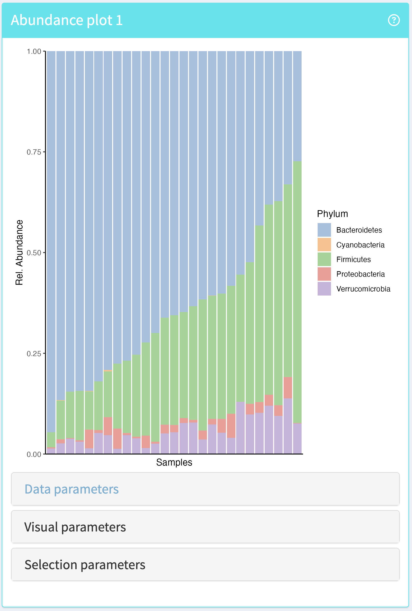
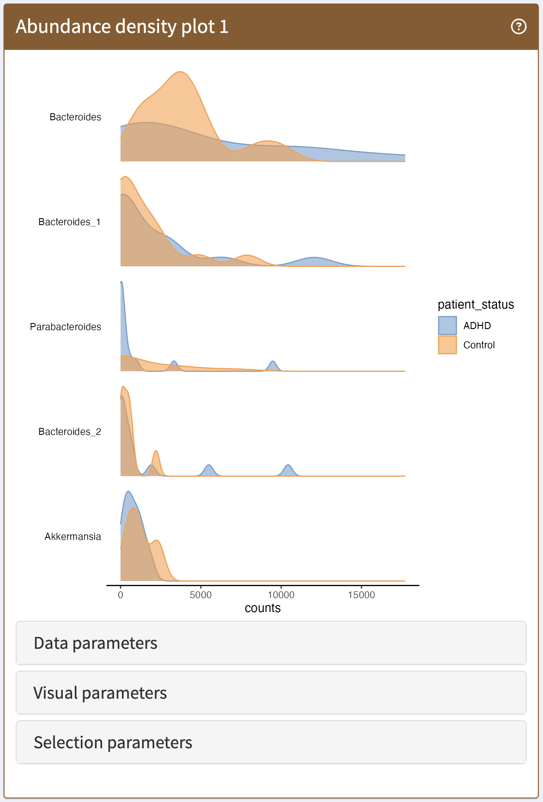
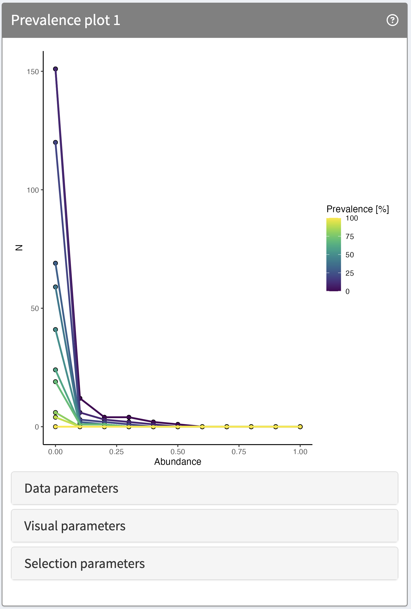
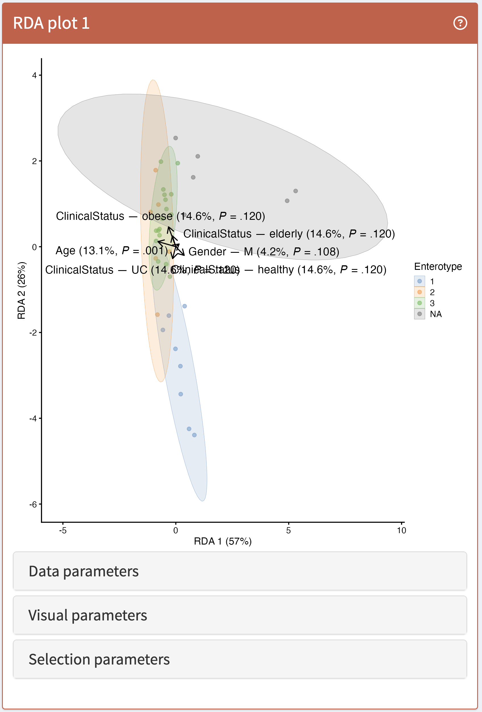
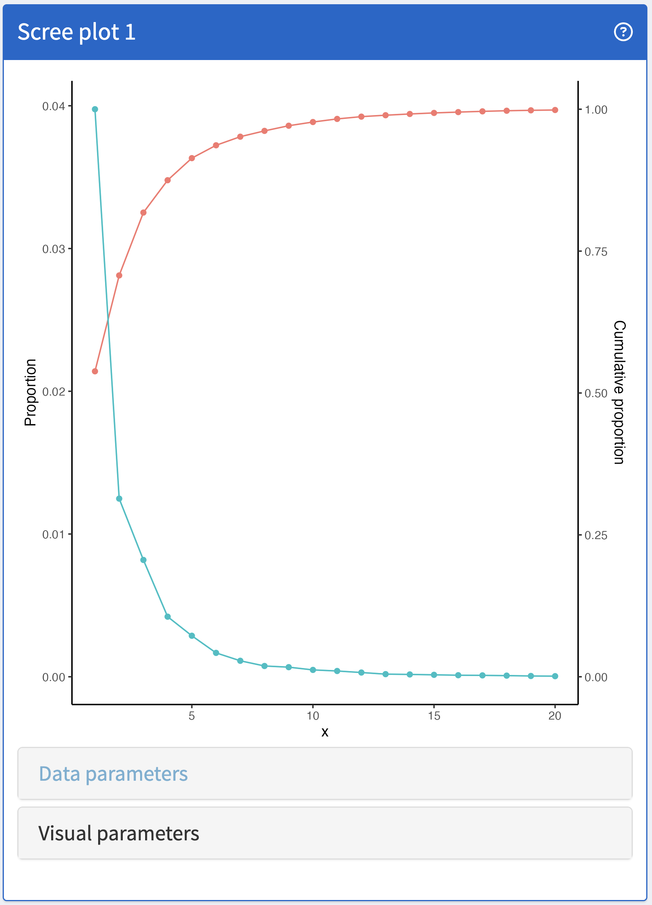
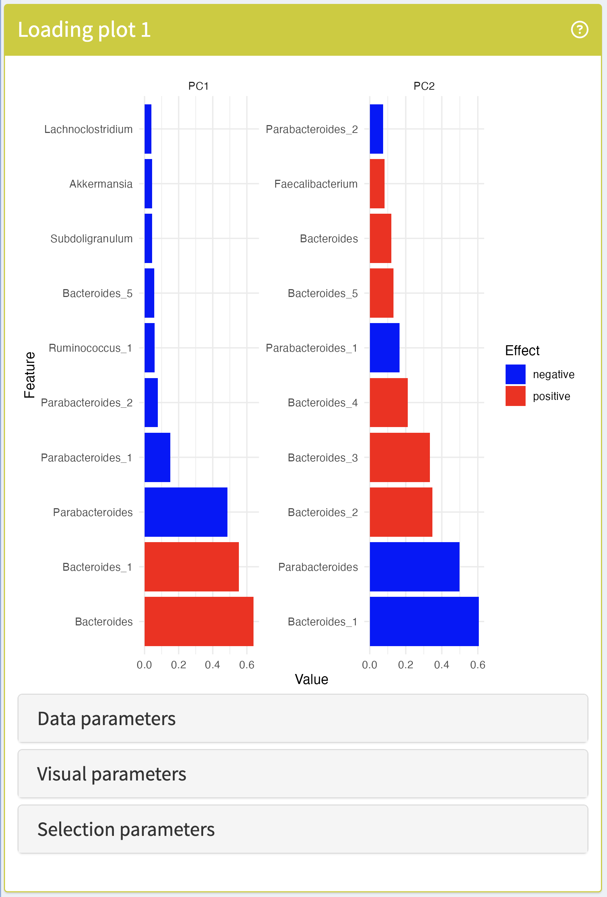
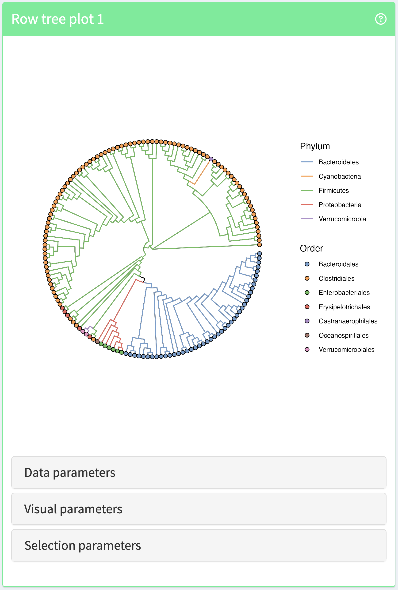
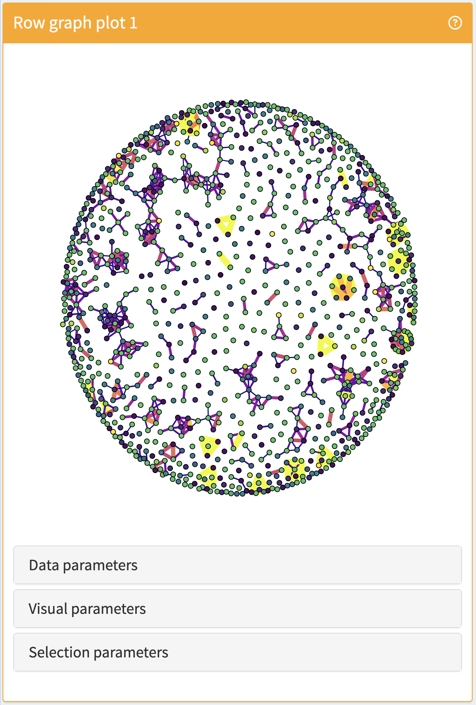

vignettes/panels.Rmd
panels.RmdThis page introduces users to the complete catalogue of panels provided by iSEEtree. Each panel is presented individually and visualised as it appears in the app. This catalogue is divided into four sections:
| Panel name | Panel class | Information |
|---|---|---|
| Abundance plot | AbundancePlot | Feature abundance by sample |
| Abundance density plot | AbundanceDensityPlot | Feature distribution across samples |
| Prevalence plot | PrevalencePlot | Feature prevalence across samples |
| Feature assay plot | FeatureAssayPlot | Feature counts by column variable |
| Complex heatmap plot | ComplexHeatmapPlot | Counts by features and samples |
The Abundance plot illustrates the feature composition of each sample with a barplot of the relative or absolute feature abundace. This panel is based on the miaViz function plotAbundance.
Supported operations:

The Abundance density plot provides an alternative way to visualise abundance. In this panel, each row represents the feature distribution across the samples. It is based on the miaViz function plotAbundanceDensity.
Supported operations:

The Prevalence plot provides an way to visualise feature prevalence across samples. In this panel, each line represents the feature abundance across the samples and prevalence is encoded by the colour. It is based on the miaViz function plotPrevalence.
Supported operations:

The Feature assay plot is inherited from iSEE. It is based on the scater function plotRowData and can be used to visualise the counts of a specific feature across samples grouped by a column variable.
See its image in the iSEE panel catalogue: FeatureAssayPlot
The Reduced dimension plot is inherited from iSEE. It is based on the ComplexHeatmap function Heatmap, which shows an entire assay as a heatmap where rows and columns represent features and samples, respectively. Hierarchical clustering as well as grouping by a variable can be performed across both dimensions.
See its image in the iSEE panel catalogue: ComplexHeatmapPlot
| Panel name | Panel class | Information |
|---|---|---|
| RDA plot | RDAPlot | Supervised ordination |
| Scree plot | ScreePlot | Explained variance by component |
| Loading plot | LoadingPlot | Feature loadings by component |
| Reduced dimension plot | ReducedDimensionPlot | Any ordination result |
The RDA plot visualises results for a distance-based Redundance Analysis (dbRDA) performed on a TreeSE object with the mia function runRDA. It is based on the miaViz function plotRDA.
Supported operations:

The Scree plot shows the proportion of variance explained by each component of a dimensionality reduction analysis by means of a line plot or barplot. It is based on the miaViz function plotScree.
Supported operations:

The Loading plot visualises the contributions of each feature to the components of a reduced dimension of choice. It is based on the miaViz function plotLoadings.
Supported operations:

The Reduced dimension plot is inherited from iSEE. It is based on the scater function plotReducedDim and can be used to visualise the results of an ordination analysis with both supervised and unsupervised methods as dot plot with reduced dimensions as coordinate axes.
See its image in the iSEE panel catalogue: ReducedDimensionPlot
| Panel name | Panel class | Information |
|---|---|---|
| Row tree plot | RowTreePlot | Hierarchical structure of features |
| Column tree plot | ColumnTreePlot | Hierarchical structure of samples |
| Row graph plot | RowGraphPlot | Network structure of features |
| Column graph plot | ColumnGraphPlot | Network structure of samples |
Row and column tree plots belong to the TreePlot family. They can be used to visualise the hierarchical organisation of the features or samples by means of a tree. They are based on the miaViz functions plotRowTree and plotColTree.
Supported operations:

Row and column graph plots belong to the GraphPlot family. They can be used to visualise the network organisation of the features or samples by means of a graph. They are based on the miaViz functions plotRowGraph and plotColGraph.
Supported operations:

| Panel name | Panel class | Information |
|---|---|---|
| Row tile plot | RowTilePlot | Variable distribution across feature groups |
| Column tile plot | ColumnTilePlot | Variable distribution across sample groups |
| Mediation plot | MediationPlot | Results of mediation analysis |
| Row data table | RowDataTable | Table of feature metadata |
| Column data table | ColumnDataTable | Table of sample metadata |
| Row data plot | RowDataPlot | Feature variable distribution |
| Column data plot | ColumnDataPlot | Sample variable distribution |
The Row and column data tables are inherited from iSEE. They are rendered as a tidy table of feeature or sample variables, respectively. From those, it is possible to select a subset of the observations and transmit it to one or many other panels.
See their images in the iSEE panel catalogue: RowDataPlot and ColumnDataPlot
The Row and column data plots are inherited from iSEE. They are based on the scater functions plotRowData and plotColData and can be used to visualise feature or sample metadata as scatter plots when the x variable is continuous or boxplots when the x variable is discrete.
See their images in the iSEE panel catalogue: RowDataTable and ColumnDataTable
R session information:
#> R version 4.6.0 (2026-04-24)
#> Platform: x86_64-pc-linux-gnu
#> Running under: Ubuntu 24.04.4 LTS
#>
#> Matrix products: default
#> BLAS: /usr/lib/x86_64-linux-gnu/openblas-pthread/libblas.so.3
#> LAPACK: /usr/lib/x86_64-linux-gnu/openblas-pthread/libopenblasp-r0.3.26.so; LAPACK version 3.12.0
#>
#> locale:
#> [1] LC_CTYPE=en_US.UTF-8 LC_NUMERIC=C LC_TIME=en_US.UTF-8 LC_COLLATE=en_US.UTF-8
#> [5] LC_MONETARY=en_US.UTF-8 LC_MESSAGES=en_US.UTF-8 LC_PAPER=en_US.UTF-8 LC_NAME=C
#> [9] LC_ADDRESS=C LC_TELEPHONE=C LC_MEASUREMENT=en_US.UTF-8 LC_IDENTIFICATION=C
#>
#> time zone: UTC
#> tzcode source: system (glibc)
#>
#> attached base packages:
#> [1] stats graphics grDevices utils datasets methods base
#>
#> other attached packages:
#> [1] BiocStyle_2.41.0
#>
#> loaded via a namespace (and not attached):
#> [1] digest_0.6.39 desc_1.4.3 R6_2.6.1 bookdown_0.46 fastmap_1.2.0
#> [6] xfun_0.57 cachem_1.1.0 knitr_1.51 htmltools_0.5.9 rmarkdown_2.31
#> [11] lifecycle_1.0.5 cli_3.6.6 sass_0.4.10 pkgdown_2.2.0 textshaping_1.0.5
#> [16] jquerylib_0.1.4 systemfonts_1.3.2 compiler_4.6.0 tools_4.6.0 ragg_1.5.2
#> [21] bslib_0.10.0 evaluate_1.0.5 yaml_2.3.12 BiocManager_1.30.27 otel_0.2.0
#> [26] jsonlite_2.0.0 rlang_1.2.0 fs_2.1.0 htmlwidgets_1.6.4